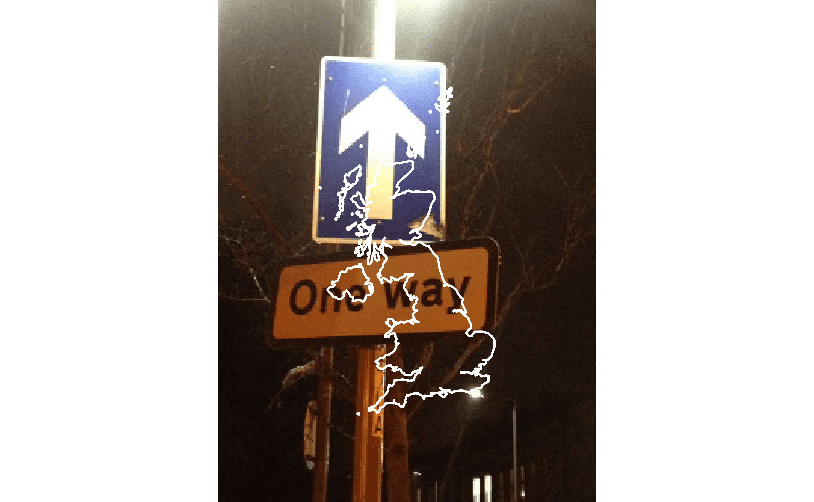
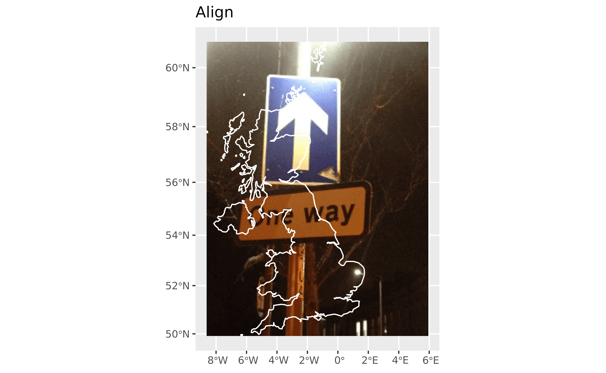
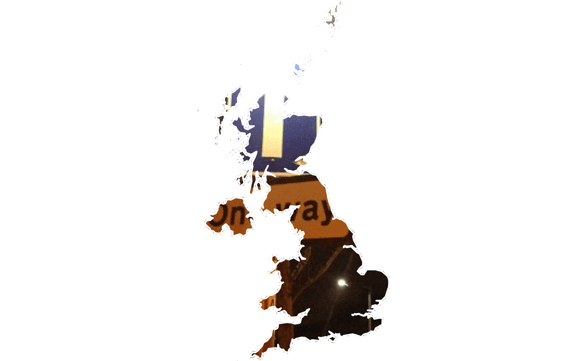
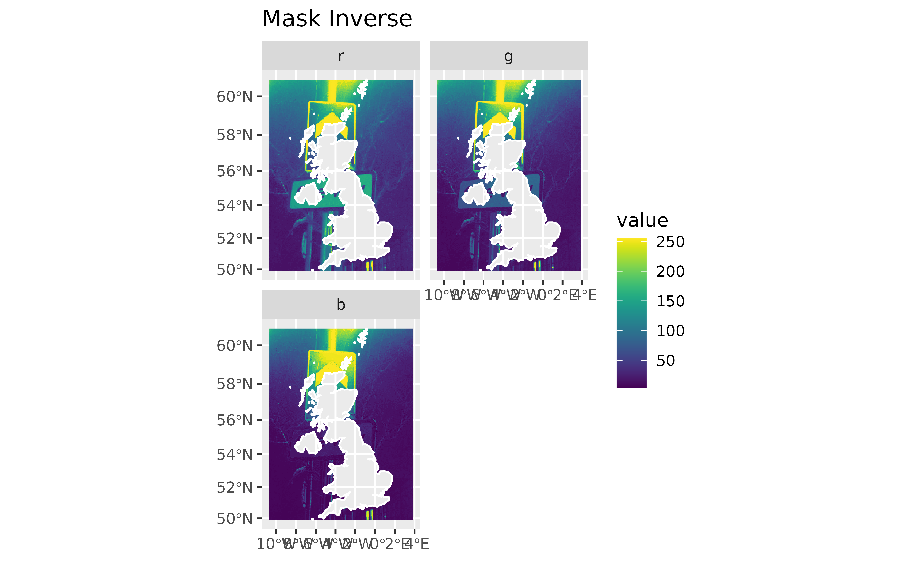
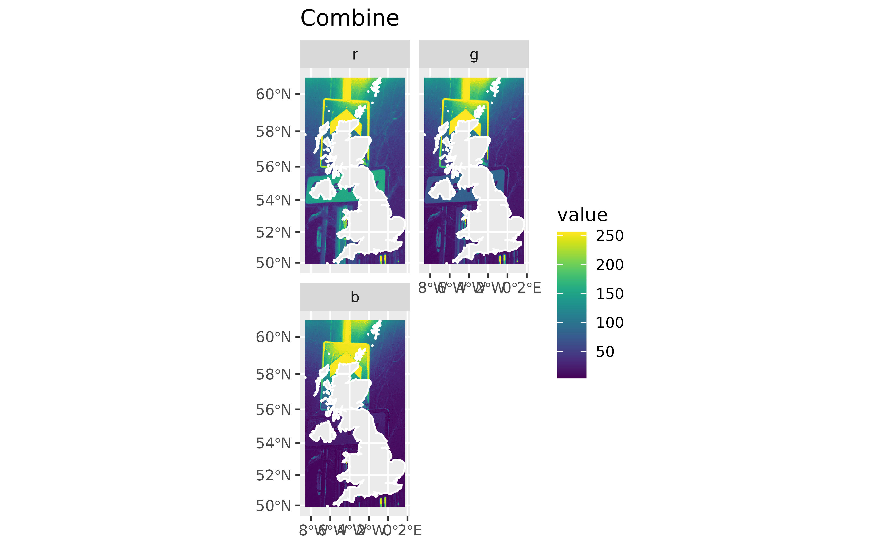

Geotags an image based on the coordinates of a spatial object.
rasterpic_img() is an S3 generic. rasterpic provides methods for
the following classes:
SpatExtentSpatRasterSpatVectorbboxdefaultnumericsfsfcsfgstars
Usage
rasterpic_img(
x,
img,
halign = 0.5,
valign = 0.5,
expand = 0,
crop = FALSE,
...
)
# S3 method for class 'sf'
rasterpic_img(
x,
img,
halign = 0.5,
valign = 0.5,
expand = 0,
crop = FALSE,
...,
mask = FALSE,
inverse = FALSE
)
# S3 method for class 'sfc'
rasterpic_img(
x,
img,
halign = 0.5,
valign = 0.5,
expand = 0,
crop = FALSE,
...,
mask = FALSE,
inverse = FALSE
)
# S3 method for class 'sfg'
rasterpic_img(
x,
img,
halign = 0.5,
valign = 0.5,
expand = 0,
crop = FALSE,
...,
mask = FALSE,
inverse = FALSE,
crs = NULL
)
# S3 method for class 'stars'
rasterpic_img(
x,
img,
halign = 0.5,
valign = 0.5,
expand = 0,
crop = FALSE,
...
)
# S3 method for class 'bbox'
rasterpic_img(
x,
img,
halign = 0.5,
valign = 0.5,
expand = 0,
crop = FALSE,
...,
crs = NULL
)
# S3 method for class 'numeric'
rasterpic_img(
x,
img,
halign = 0.5,
valign = 0.5,
expand = 0,
crop = FALSE,
...,
crs = NULL
)
# S3 method for class 'SpatRaster'
rasterpic_img(
x,
img,
halign = 0.5,
valign = 0.5,
expand = 0,
crop = FALSE,
...
)
# S3 method for class 'SpatVector'
rasterpic_img(
x,
img,
halign = 0.5,
valign = 0.5,
expand = 0,
crop = FALSE,
...,
mask = FALSE,
inverse = FALSE
)
# S3 method for class 'SpatExtent'
rasterpic_img(
x,
img,
halign = 0.5,
valign = 0.5,
expand = 0,
crop = FALSE,
...,
crs = NULL
)Arguments
- x
An R object (see S3 methods).
- img
An image to be geotagged. It can be a local file or a URL (e.g.
"https://i.imgur.com/6yHmlwT.jpeg"). Accepted extensions arepng,jpeg/jpgandtiff/tif.- halign
A number between
0and1giving the horizontal alignment ofimgrelative tox.0alignsxwith the left edge,1aligns with the right edge and0.5centers it horizontally.- valign
A number between
0and1giving the vertical alignment ofimgrelative tox.0alignsxwith the bottom edge,1aligns with the top edge and0.5centers it vertically.- expand
An expansion factor of the bounding box of
x.0means that no expansion is added,1means that the bounding box is expanded to double the original size. See Details.- crop
Logical. Should the raster be cropped to the (expanded) bounding box of
x? See Details.- ...
Further arguments passed to methods.
- mask
Logical, available for vector methods. Should the raster be masked to the shape of
x? See Details.- inverse
Logical. This only has an effect when
mask = TRUE. IfTRUE, areas of the raster covered byxare masked.- crs
Character string describing a CRS. This parameter only applies when
xis aSpatExtent,sfg,bboxor a numeric coordinate vector. See CRS section.
Value
A SpatRaster object (see terra::rast()) where each layer corresponds to
a color channel of img:
If
imghas at least 3 layers, the result will have an additional property setting layers 1 to 3 as the red, green and blue channels with names"r","g"and"b"andalphaif applicable.If
imgalready has a definition of RGB values (this may be the case fortiff/tiffiles) the result will keep that channel definition.
The resulting SpatRaster will have an RGB specification as explained in
terra::RGB().
Details
vignette("rasterpic", package = "rasterpic") explains, with examples, the
effect of parameters halign, valign, expand, crop and mask.
S3 methods
rasterpic supports the following input classes:
sf classes:
sf,sfc,sfgorbbox.terra classes:
SpatRaster,SpatVectorandSpatExtent.stars classes:
stars.A numeric coordinate vector of the form
c(xmin, ymin, xmax, ymax).
Other packages can provide methods for additional spatial classes.
Methods for extent-like inputs use the object extent. Methods for vector inputs can also mask the image to the object shape.
CRS
This function preserves the CRS of x when applicable. For optimal results,
do not use geographic coordinates (longitude/latitude).
crs can be in a WKT format, as a "authority:number" code such as
"EPSG:4326" or a PROJ-string format such as "+proj=utm +zone=12". It can
also be retrieved with:
See Value and Notes in terra::crs().
See also
vignette("rasterpic", package = "rasterpic") for examples.
From sf:
vignette("sf1", package = "sf")to understand how sf organizes R objects.
From stars:
From terra:
For plotting:
Examples
# \donttest{
library(sf)
#> Linking to GEOS 3.12.1, GDAL 3.8.4, PROJ 9.4.0; sf_use_s2() is TRUE
library(terra)
library(ggplot2)
library(tidyterra)
#>
#> Attaching package: ‘tidyterra’
#> The following object is masked from ‘package:stats’:
#>
#> filter
x_path <- system.file("gpkg/UK.gpkg", package = "rasterpic")
x <- st_read(x_path, quiet = TRUE)
img <- system.file("img/vertical.png", package = "rasterpic")
# Default configuration.
ex1 <- rasterpic_img(x, img)
ex1
#> class : SpatRaster
#> size : 333, 250, 3 (nrow, ncol, nlyr)
#> resolution : 6484.467, 6484.467 (x, y)
#> extent : -1193414, 427703.2, 6430573, 8589900 (xmin, xmax, ymin, ymax)
#> coord. ref. : WGS 84 / Pseudo-Mercator (EPSG:3857)
#> source(s) : memory
#> colors rgb : 1, 2, 3
#> names : r, g, b
#> min values : 15, 8, 4
#> max values : 254, 255, 254
autoplot(ex1) +
geom_sf(data = x, fill = NA, color = "white", linewidth = 0.5)
# Expand.
ex2 <- rasterpic_img(x, img, expand = 0.5)
autoplot(ex2) +
geom_sf(data = x, fill = NA, color = "white", linewidth = 0.5)

# Align.
ex3 <- rasterpic_img(x, img, halign = 0)
autoplot(ex3) +
geom_sf(data = x, fill = NA, color = "white", linewidth = 0.5)

labs(title = "Align")
#> <ggplot2::labels> List of 1
#> $ title: chr "Align"
# Crop.
ex4 <- rasterpic_img(x, img, crop = TRUE)
autoplot(ex4) +
geom_sf(data = x, fill = NA, color = "white", linewidth = 0.5) +
labs(title = "Crop")
# Mask.
ex5 <- rasterpic_img(x, img, mask = TRUE)
autoplot(ex5) +
geom_sf(data = x, fill = NA, color = "white", linewidth = 0.5) +
labs(title = "Mask")

# Inverse mask.
ex6 <- rasterpic_img(x, img, mask = TRUE, inverse = TRUE)
autoplot(ex6) +
geom_sf(data = x, fill = NA, color = "white", linewidth = 0.5) +
labs(title = "Mask Inverse")

# Combine inverse masking and cropping.
ex7 <- rasterpic_img(x, img, crop = TRUE, mask = TRUE, inverse = TRUE)
autoplot(ex7) +
geom_sf(data = x, fill = NA, color = "white", linewidth = 0.5) +
labs(title = "Combine")

# }